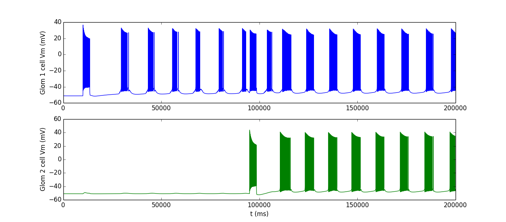

Model files from the paper: Zylbertal et al., "Synchronous infra-slow bursting in the mouse accessory olfactory bulb emerge from interplay between intrinsic neuronal dynamics and network connectivity", J Neurosci (2017) https://doi.org/10.1523/JNEUROSCI.3107-16.2017 The file multi_glomeruli_integration.py reproduces the protocol used in Fig. 8 of the article by calling the modules mitral_definition.py glomeruli.py. Questions on how to use this model should be directed to asaph.zylbertal at mail.huji.ac.il Synopsis: Infra-slow rhythmic neuronal activity with very long (> 10 s) period duration was described in many brain areas but little is known about the role of this activity and the mechanisms that produce it. Here we combine experimental and computational methods to show that synchronous infra-slow bursting activity in mitral cells of the mouse accessory olfactory bulb (AOB) emerges from interplay between intracellular dynamics and network connectivity. In this novel mechanism, slow intracellular Na+ dynamics endow AOB mitral cells with a weak tendency to burst, which is further enhanced and stabilized by chemical and electrical synapses between them. Combined with the unique topology of the AOB network, infra-slow bursting enables integration and binding of multiple chemosensory stimuli over prolonged time scale. The example protocol simulates a two-glomeruli network (15-cell and 13-cell glomeruli) with a single shared cell. Although each glomerulus is stimulated at a different time point, the activity of the entire population becomes synchronous (see paper Fig. 8) Example use: Extract the archive, run nrnivmodl in the channels directory (linux/unix) or mknrndll (mswin or mac os x) (see http://senselab.med.yale.edu/ModelDB/NEURON_DwnldGuide.html for more help) to compile the channels, and run the file multi_glomeruli_integration.py. After a while, it will start plotting the membrane potential of two cells, one from each glomerulus. The completion of the simulation typically takes a few hours (see image below). 